pacman::p_load(sf, spatstat, raster, maptools, tmap)Take Home Ex 3
1.0 Overview
In this exercise, my focus would be on 1st order Spatial Point Analysis, particularly finding out the density and distribution trends of eldercare facilities.
2.0 R packages
I will load the following R packages for the following purposes:
sf: to import, manage and process vector-based geospatial data in R.
spatstat: to perform 1st- and 2nd-order spatial point patterns analysis and derive kernel density estimation (KDE) layer.
raster: used to convert image output generate by spatstat into raster format.
maptools: use it to convert Spatial objects into ppp format of spatstat.
tmap which provides functions for plotting cartographic quality static point patterns maps or interactive maps by using leaflet API.
3.0 Data Preparation
The data that I will be using includes:
URA 2014 Master Plan Planning Subzone boundary data. This data is in shapefile format which is downloaded from Data.gov.sg
Eldercare Services. This data provides both the location and information of eldercare services in Singapore. It was downloaded from Data.gov.sg and is in geojson format.
eldercare <- st_read("data/EldercareServices.geojson") %>% st_transform(crs = 3414)Reading layer `EldercareServices' from data source
`C:\Nathania02\IS415-GAA\Take-home_Ex\Take-home_Ex03\data\EldercareServices.geojson'
using driver `GeoJSON'
Simple feature collection with 133 features and 2 fields
Geometry type: POINT
Dimension: XYZ
Bounding box: xmin: 103.7119 ymin: 1.271472 xmax: 103.9561 ymax: 1.439561
z_range: zmin: 0 zmax: 0
Geodetic CRS: WGS 84mpsz_sf <- st_read(dsn="data",layer="MP14_SUBZONE_WEB_PL")Reading layer `MP14_SUBZONE_WEB_PL' from data source
`C:\Nathania02\IS415-GAA\Take-home_Ex\Take-home_Ex03\data'
using driver `ESRI Shapefile'
Simple feature collection with 323 features and 15 fields
Geometry type: MULTIPOLYGON
Dimension: XY
Bounding box: xmin: 2667.538 ymin: 15748.72 xmax: 56396.44 ymax: 50256.33
Projected CRS: SVY21sg_sf <- st_read(dsn = "data", layer="CostalOutline")Reading layer `CostalOutline' from data source
`C:\Nathania02\IS415-GAA\Take-home_Ex\Take-home_Ex03\data'
using driver `ESRI Shapefile'
Simple feature collection with 60 features and 4 fields
Geometry type: POLYGON
Dimension: XY
Bounding box: xmin: 2663.926 ymin: 16357.98 xmax: 56047.79 ymax: 50244.03
Projected CRS: SVY21Since mpsz_sf does not have the proper crs information, the code chunk below updates the crs information.
mpsz_sf <- st_transform(mpsz_sf, crs=3414)
sg_sf <- st_transform(sg_sf, crs=3414)4.0 Mapping the datasets
tm_shape(sg_sf) + tm_polygons() + tm_shape(mpsz_sf) + tm_polygons() + tm_shape(eldercare) + tm_dots()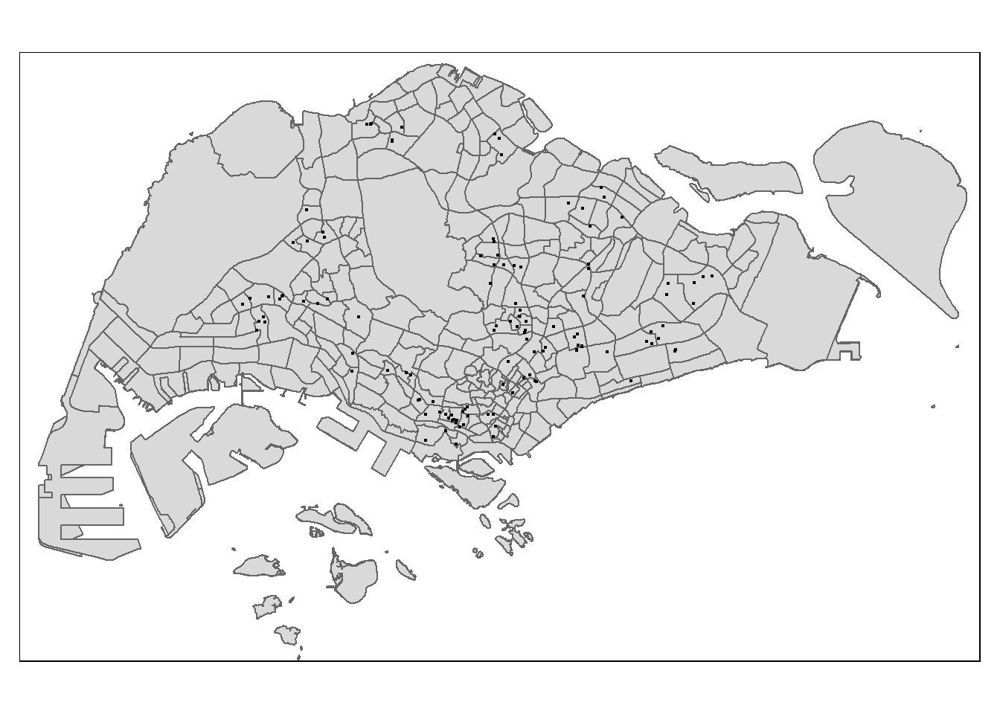
5.0 Geospatial Data Wrangling
5.1 Convert sf data frames to sp Spatial classes
mpsz <- as_Spatial(mpsz_sf)
ec <- as_Spatial(eldercare)
sg <- as_Spatial(sg_sf)
mpszclass : SpatialPolygonsDataFrame
features : 323
extent : 2667.538, 56396.44, 15748.72, 50256.33 (xmin, xmax, ymin, ymax)
crs : +proj=tmerc +lat_0=1.36666666666667 +lon_0=103.833333333333 +k=1 +x_0=28001.642 +y_0=38744.572 +ellps=WGS84 +towgs84=0,0,0,0,0,0,0 +units=m +no_defs
variables : 15
names : OBJECTID, SUBZONE_NO, SUBZONE_N, SUBZONE_C, CA_IND, PLN_AREA_N, PLN_AREA_C, REGION_N, REGION_C, INC_CRC, FMEL_UPD_D, X_ADDR, Y_ADDR, SHAPE_Leng, SHAPE_Area
min values : 1, 1, ADMIRALTY, AMSZ01, N, ANG MO KIO, AM, CENTRAL REGION, CR, 00F5E30B5C9B7AD8, 16409, 5092.8949, 19579.069, 871.554887798, 39437.9352703
max values : 323, 17, YUNNAN, YSSZ09, Y, YISHUN, YS, WEST REGION, WR, FFCCF172717C2EAF, 16409, 50424.7923, 49552.7904, 68083.9364708, 69748298.792 ecclass : SpatialPointsDataFrame
features : 133
extent : 14481.92, 41665.14, 28218.43, 46804.9 (xmin, xmax, ymin, ymax)
crs : +proj=tmerc +lat_0=1.36666666666667 +lon_0=103.833333333333 +k=1 +x_0=28001.642 +y_0=38744.572 +ellps=WGS84 +towgs84=0,0,0,0,0,0,0 +units=m +no_defs
variables : 2
names : Name, Description
min values : kml_1, <center><table><tr><th colspan='2' align='center'><em>Attributes</em></th></tr><tr bgcolor="#E3E3F3"> <th>ADDRESSBLOCKHOUSENUMBER</th> <td></td> </tr><tr bgcolor=""> <th>ADDRESSBUILDINGNAME</th> <td></td> </tr><tr bgcolor="#E3E3F3"> <th>ADDRESSPOSTALCODE</th> <td>050005</td> </tr><tr bgcolor=""> <th>ADDRESSSTREETNAME</th> <td>5 Banda St #03-68</td> </tr><tr bgcolor="#E3E3F3"> <th>ADDRESSTYPE</th> <td></td> </tr><tr bgcolor=""> <th>DESCRIPTION</th> <td></td> </tr><tr bgcolor="#E3E3F3"> <th>HYPERLINK</th> <td></td> </tr><tr bgcolor=""> <th>LANDXADDRESSPOINT</th> <td>0</td> </tr><tr bgcolor="#E3E3F3"> <th>LANDYADDRESSPOINT</th> <td>0</td> </tr><tr bgcolor=""> <th>NAME</th> <td>Kreta Ayer Senior Activity Centre (Banda)</td> </tr><tr bgcolor="#E3E3F3"> <th>PHOTOURL</th> <td></td> </tr><tr bgcolor=""> <th>ADDRESSFLOORNUMBER</th> <td></td> </tr><tr bgcolor="#E3E3F3"> <th>INC_CRC</th> <td>BCA8DC14F5DC7133</td> </tr><tr bgcolor=""> <th>FMEL_UPD_D</th> <td>20160728192327</td> </tr><tr bgcolor="#E3E3F3"> <th>ADDRESSUNITNUMBER</th> <td></td> </tr></table></center>
max values : kml_99, <center><table><tr><th colspan='2' align='center'><em>Attributes</em></th></tr><tr bgcolor="#E3E3F3"> <th>ADDRESSBLOCKHOUSENUMBER</th> <td></td> </tr><tr bgcolor=""> <th>ADDRESSBUILDINGNAME</th> <td></td> </tr><tr bgcolor="#E3E3F3"> <th>ADDRESSPOSTALCODE</th> <td>822211</td> </tr><tr bgcolor=""> <th>ADDRESSSTREETNAME</th> <td>Blk 211B Punggol Walk</td> </tr><tr bgcolor="#E3E3F3"> <th>ADDRESSTYPE</th> <td></td> </tr><tr bgcolor=""> <th>DESCRIPTION</th> <td></td> </tr><tr bgcolor="#E3E3F3"> <th>HYPERLINK</th> <td></td> </tr><tr bgcolor=""> <th>LANDXADDRESSPOINT</th> <td>0</td> </tr><tr bgcolor="#E3E3F3"> <th>LANDYADDRESSPOINT</th> <td>0</td> </tr><tr bgcolor=""> <th>NAME</th> <td>Pacific Activity Centres Pte Ltd</td> </tr><tr bgcolor="#E3E3F3"> <th>PHOTOURL</th> <td></td> </tr><tr bgcolor=""> <th>ADDRESSFLOORNUMBER</th> <td></td> </tr><tr bgcolor="#E3E3F3"> <th>INC_CRC</th> <td>81B7D19CD919CEEA</td> </tr><tr bgcolor=""> <th>FMEL_UPD_D</th> <td>20160728192327</td> </tr><tr bgcolor="#E3E3F3"> <th>ADDRESSUNITNUMBER</th> <td></td> </tr></table></center> sgclass : SpatialPolygonsDataFrame
features : 60
extent : 2663.926, 56047.79, 16357.98, 50244.03 (xmin, xmax, ymin, ymax)
crs : +proj=tmerc +lat_0=1.36666666666667 +lon_0=103.833333333333 +k=1 +x_0=28001.642 +y_0=38744.572 +ellps=WGS84 +towgs84=0,0,0,0,0,0,0 +units=m +no_defs
variables : 4
names : GDO_GID, MSLINK, MAPID, COSTAL_NAM
min values : 1, 1, 0, ISLAND LINK
max values : 60, 67, 0, SINGAPORE - MAIN ISLAND 5.2 Convert the Spatial class into generic sp format
ec_sp <- as(ec, "SpatialPoints")
sg_sp <- as(sg, "SpatialPolygons")
ec_spclass : SpatialPoints
features : 133
extent : 14481.92, 41665.14, 28218.43, 46804.9 (xmin, xmax, ymin, ymax)
crs : +proj=tmerc +lat_0=1.36666666666667 +lon_0=103.833333333333 +k=1 +x_0=28001.642 +y_0=38744.572 +ellps=WGS84 +towgs84=0,0,0,0,0,0,0 +units=m +no_defs sg_spclass : SpatialPolygons
features : 60
extent : 2663.926, 56047.79, 16357.98, 50244.03 (xmin, xmax, ymin, ymax)
crs : +proj=tmerc +lat_0=1.36666666666667 +lon_0=103.833333333333 +k=1 +x_0=28001.642 +y_0=38744.572 +ellps=WGS84 +towgs84=0,0,0,0,0,0,0 +units=m +no_defs 5.3 Convert generic sp format inso spatstat ppp format
ec_ppp <- as.ppp(eldercare)Warning in as.ppp.sf(eldercare): only first attribute column is used for marksec_pppMarked planar point pattern: 133 points
marks are of storage type 'character'
window: rectangle = [14481.92, 41665.14] x [28218.43, 46804.9] unitssummary(ec_ppp)Marked planar point pattern: 133 points
Average intensity 2.632412e-07 points per square unit
Coordinates are given to 11 decimal places
marks are of type 'character'
Summary:
Length Class Mode
133 character character
Window: rectangle = [14481.92, 41665.14] x [28218.43, 46804.9] units
(27180 x 18590 units)
Window area = 505240000 square units5.4 Check for duplicate values
Although the summary does not say that there are duplicate values, we will just do a check to make sure that we did not miss out anything.
any(duplicated(ec_ppp))[1] FALSE5.5 Creating owin object
sg_owin <- as.owin(sg_sf)
plot(sg_owin)
5.6 Combining point events objects and owin object
eldercareSG_ppp = ec_ppp[sg_owin]
plot(eldercareSG_ppp)Warning in default.charmap(ntypes, chars): Too many types to display every type
as a different characterWarning: Only 10 out of 133 symbols are shown in the symbol map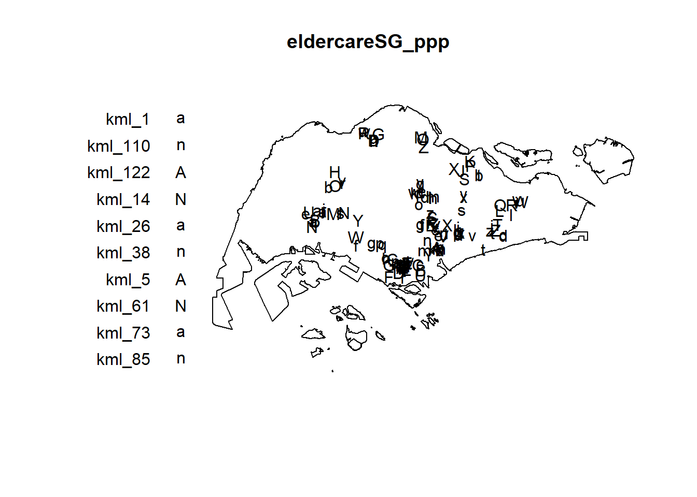
6.0 1st Order Spatial Point Pattern Analysis
6.1 Kernel Density Estimation (KDE)
I would like to compute the KDE of eldercare services in Singapore.
kde_eldercareSG_bw <- density(eldercareSG_ppp, sigma=bw.diggle, edge=TRUE, kernel="gaussian")
plot(kde_eldercareSG_bw)
6.2 Rescalling KDE values
eldercareSG_ppp.km <- rescale.ppp(eldercareSG_ppp, 1000, "km")
kde_eldercareSG.bw <- density(eldercareSG_ppp.km, sigma=bw.diggle, edge=TRUE, kernel="gaussian")
plot(kde_eldercareSG.bw)
7.0 Comparing Spatial Point Patterns using KDE
7.1 Extracting study area
I will focus on certain planning areas in Singapore
library(dplyr)
Attaching package: 'dplyr'The following objects are masked from 'package:raster':
intersect, select, unionThe following object is masked from 'package:nlme':
collapseThe following objects are masked from 'package:stats':
filter, lagThe following objects are masked from 'package:base':
intersect, setdiff, setequal, uniontoapayoh <- mpsz_sf %>%
filter(PLN_AREA_N == "TOA PAYOH")
bukitmerah <- mpsz_sf %>%
filter(PLN_AREA_N == "BUKIT MERAH")
bishan <- mpsz_sf %>%
filter(PLN_AREA_N == "BISHAN")
amk <- mpsz_sf %>%
filter(PLN_AREA_N == "ANG MO KIO")
juronge <- mpsz_sf %>%
filter(PLN_AREA_N == "JURONG EAST")
woodlands <- mpsz_sf %>%
filter(PLN_AREA_N == "WOODLANDS")
changi <- mpsz_sf %>%
filter(PLN_AREA_N == "CHANGI")
pasirris <- mpsz_sf %>%
filter(PLN_AREA_N == "PASIR RIS")
bedok <- mpsz_sf %>%
filter(PLN_AREA_N == "BEDOK")
tm <- mpsz_sf %>%
filter(PLN_AREA_N == "TAMPINES")
punggol <- mpsz_sf %>%
filter(PLN_AREA_N == "CHOA CHU KANG")
yishun <- mpsz_sf %>%
filter(PLN_AREA_N == "YISHUN")
sembawang <- mpsz_sf %>%
filter(PLN_AREA_N == "SEMBAWANG")
bukitbatok <- mpsz_sf %>%
filter(PLN_AREA_N == "BUKIT BATOK")
jurongw <- mpsz_sf %>%
filter(PLN_AREA_N == "JURONG WEST")7.2 Creating owin object
tp_owin = as.owin(toapayoh)
bs_owin = as.owin(bishan)
amk_owin = as.owin(amk)
je_owin = as.owin(juronge)
wdlds_owin = as.owin(woodlands)
changi_owin = as.owin(changi)
pr_owin = as.owin(pasirris)
bedok_owin = as.owin(bedok)
tm_owin = as.owin(tm)
pg_owin = as.owin(punggol)
ys_owin = as.owin(yishun)
sbw_owin = as.owin(sembawang)
bb_owin = as.owin(bukitbatok)
jw_owin = as.owin(jurongw)7.3 Combining eldercare points and study area
ec_tp_ppp = ec_ppp[tp_owin]
ec_bs_ppp = ec_ppp[bs_owin]
ec_amk_ppp = ec_ppp[amk_owin]
ec_je_ppp = ec_ppp[je_owin]
ec_wdlds_ppp = ec_ppp[wdlds_owin]
ec_changi_ppp = ec_ppp[changi_owin]
ec_pr_ppp = ec_ppp[pr_owin]
ec_bedok_ppp = ec_ppp[bedok_owin]
ec_tm_ppp = ec_ppp[tm_owin]
ec_pg_ppp = ec_ppp[pg_owin]
ec_ys_ppp = ec_ppp[ys_owin]
ec_sbw_ppp = ec_ppp[sbw_owin]
ec_bb_ppp = ec_ppp[bb_owin]
ec_jw_ppp = ec_ppp[jw_owin]7.4 Rescalling
ec_tp_ppp.km = rescale.ppp(ec_tp_ppp, 1000, "km")
ec_bs_ppp.km = rescale.ppp(ec_bs_ppp, 1000, "km")
ec_amk_ppp.km = rescale.ppp(ec_amk_ppp, 1000, "km")
ec_je_ppp.km = rescale.ppp(ec_je_ppp, 1000, "km")
ec_wdlds_ppp.km = rescale.ppp(ec_wdlds_ppp, 1000, "km")
ec_changi_ppp.km = rescale.ppp(ec_changi_ppp, 1000, "km")
ec_pr_ppp.km = rescale.ppp(ec_pr_ppp, 1000, "km")
ec_bedok_ppp.km = rescale.ppp(ec_bedok_ppp, 1000, "km")
ec_tm_ppp.km = rescale.ppp(ec_tm_ppp, 1000, "km")
ec_pg_ppp.km = rescale.ppp(ec_pg_ppp, 1000, "km")
ec_ys_ppp.km = rescale.ppp(ec_ys_ppp, 1000, "km")
ec_sbw_ppp.km = rescale.ppp(ec_sbw_ppp, 1000, "km")
ec_bb_ppp.km = rescale.ppp(ec_bb_ppp, 1000, "km")
ec_jw_ppp.km = rescale.ppp(ec_jw_ppp, 1000, "km")summary(ec_changi_ppp.km)Marked planar point pattern: 0 points
Average intensity 0 points per square km
Coordinates are integers
i.e. rounded to the nearest km
marks are of type 'character'
Summary:
Length Class Mode
0 character character
Window: polygonal boundary
single connected closed polygon with 800 vertices
enclosing rectangle: [42.57532, 50.29396] x [32.52441, 41.74324] km
(7.719 x 9.219 km)
Window area = 40.9405 square km
Unit of length: 1 km
Fraction of frame area: 0.5757.5 Computing KDE
# par(mfrow=c(2,2))
plot(density(ec_tp_ppp.km,
sigma=bw.diggle,
edge=TRUE,
kernel="gaussian"),
main="Toa Payoh")Warning: Berman-Diggle Cross-Validation criterion was minimised at right-hand
end of interval [0, 0.119]; use argument 'hmax' to specify a wider interval for
bandwidth 'sigma'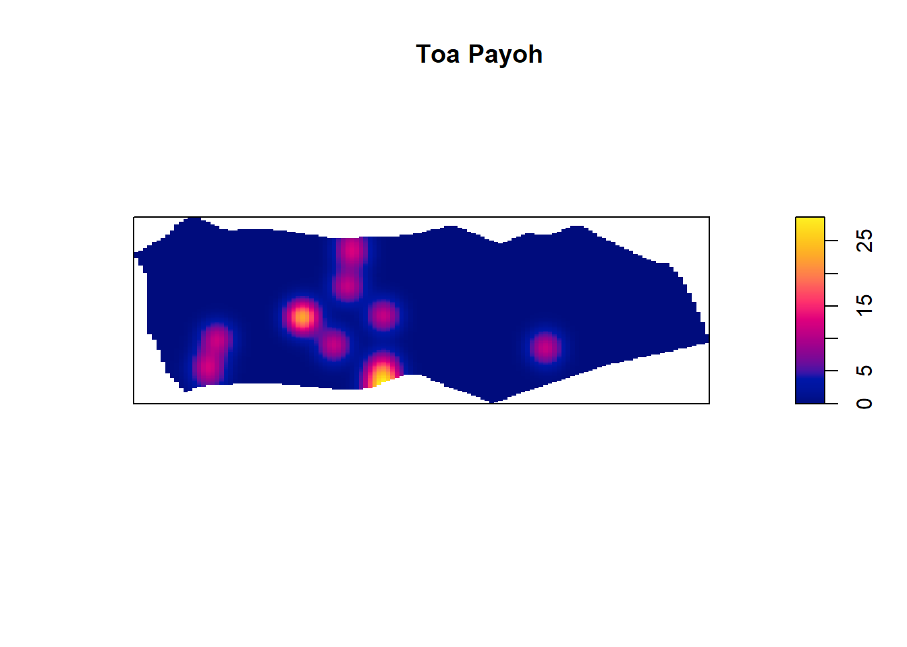
plot(density(ec_bs_ppp.km,
sigma=bw.diggle,
edge=TRUE,
kernel="gaussian"),
main="Bishan")Warning: Berman-Diggle Cross-Validation criterion was minimised at right-hand
end of interval [0, 0.179]; use argument 'hmax' to specify a wider interval for
bandwidth 'sigma'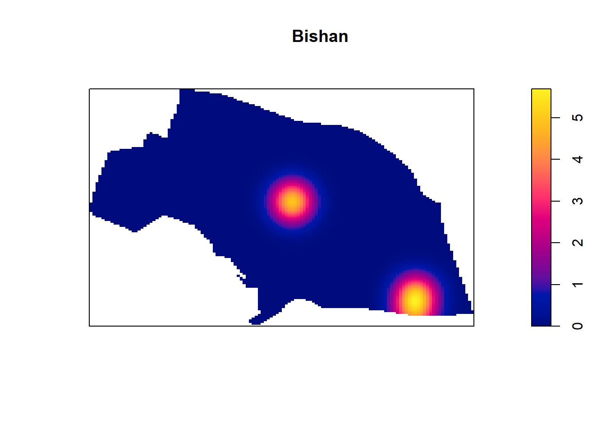
plot(density(ec_amk_ppp.km,
sigma=bw.diggle,
edge=TRUE,
kernel="gaussian"),
main="Ang Mo Kio")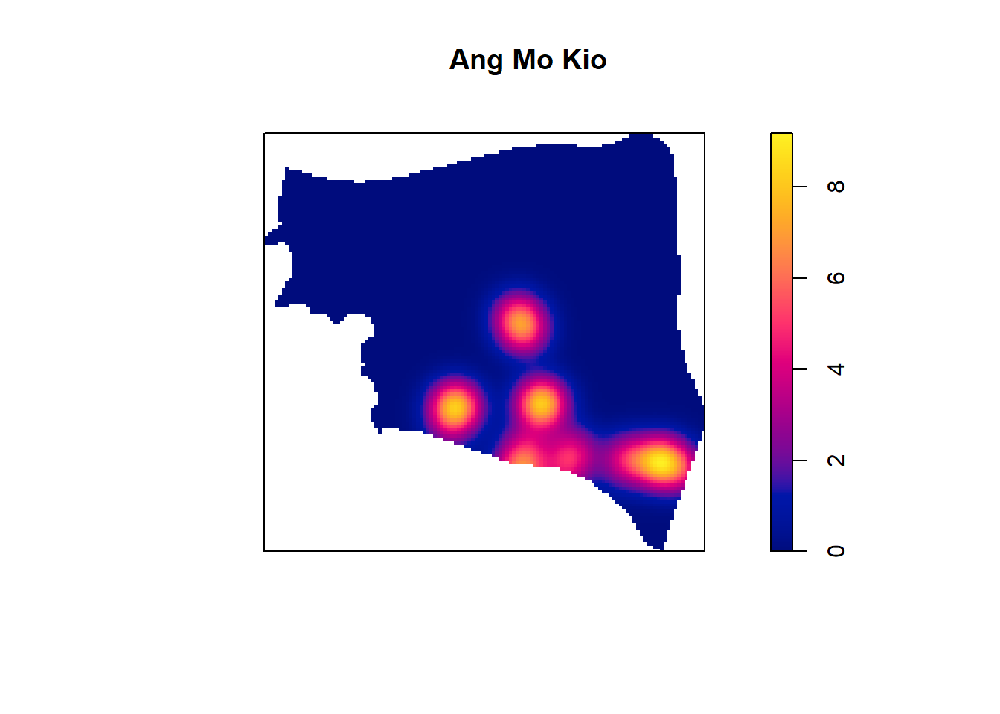
plot(density(ec_je_ppp.km,
sigma=bw.diggle,
edge=TRUE,
kernel="gaussian"),
main="Jurong East")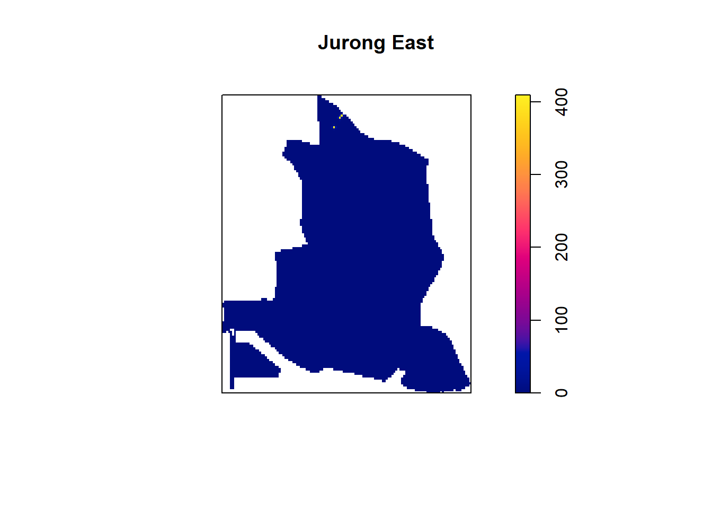
plot(density(ec_wdlds_ppp.km,
sigma=bw.diggle,
edge=TRUE,
kernel="gaussian"),
main="Woodlands")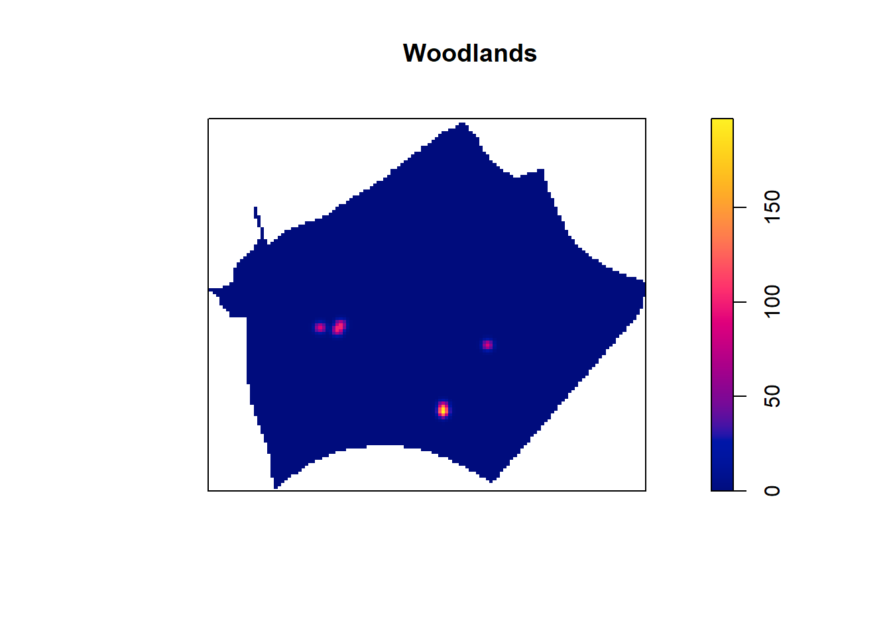
#
# plot(density(ec_changi_ppp.km,
# sigma=bw.diggle,
# edge=TRUE,
# kernel="gaussian"),
# main="Changi")
# plot(density(ec_pr_ppp.km,
# sigma=bw.diggle,
# edge=TRUE,
# kernel="gaussian"),
# main="Pasir Ris")
plot(density(ec_bedok_ppp.km,
sigma=bw.diggle,
edge=TRUE,
kernel="gaussian"),
main="Bedok")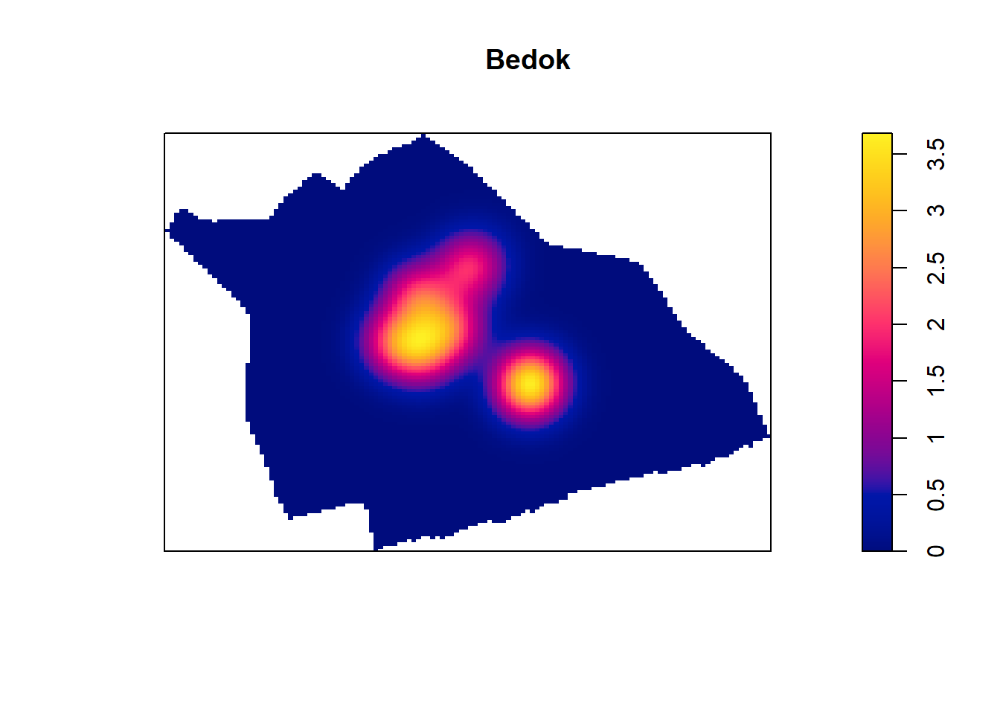
plot(density(ec_tm_ppp.km,
sigma=bw.diggle,
edge=TRUE,
kernel="gaussian"),
main="Tampines")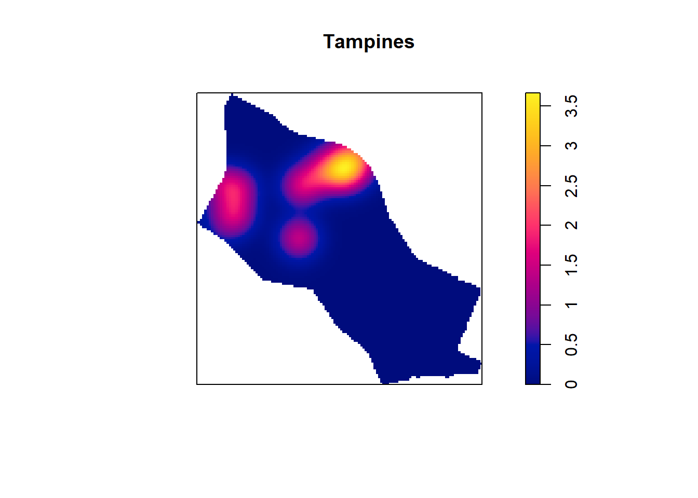
plot(density(ec_pg_ppp.km,
sigma=bw.diggle,
edge=TRUE,
kernel="gaussian"),
main="Punggol")Warning: Berman-Diggle Cross-Validation criterion was minimised at right-hand
end of interval [0, 0.198]; use argument 'hmax' to specify a wider interval for
bandwidth 'sigma'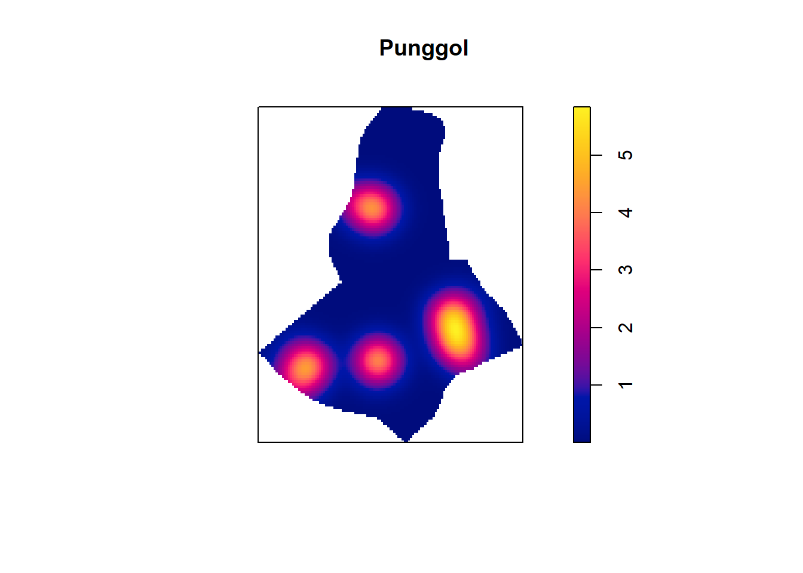
plot(density(ec_ys_ppp.km,
sigma=bw.diggle,
edge=TRUE,
kernel="gaussian"),
main="Yishun")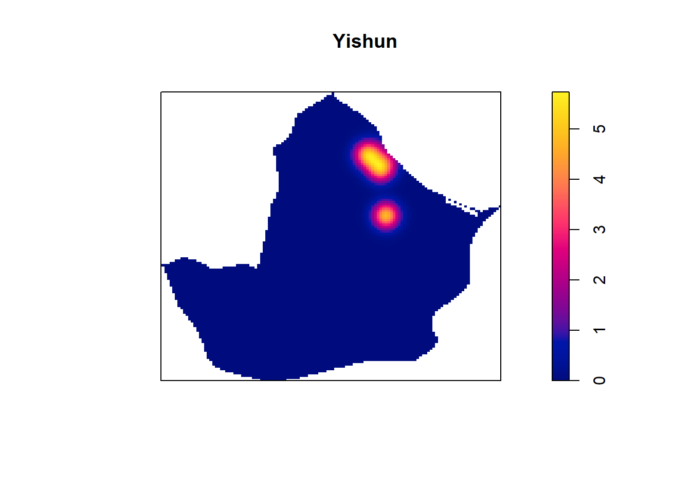
# plot(density(ec_sbw_ppp.km,
# sigma=bw.diggle,
# edge=TRUE,
# kernel="gaussian"),
# main="Sembawang")
plot(density(ec_bb_ppp.km,
sigma=bw.diggle,
edge=TRUE,
kernel="gaussian"),
main="Bukit Batok")Warning: Berman-Diggle Cross-Validation criterion was minimised at right-hand
end of interval [0, 0.235]; use argument 'hmax' to specify a wider interval for
bandwidth 'sigma'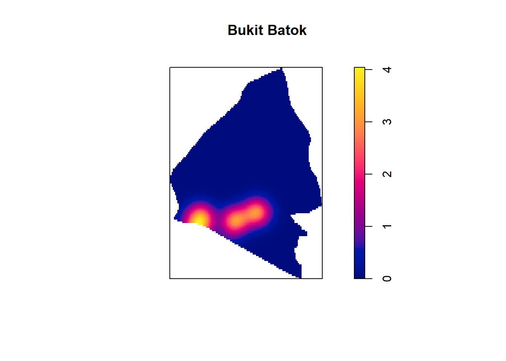
plot(density(ec_jw_ppp.km,
sigma=bw.diggle,
edge=TRUE,
kernel="gaussian"),
main="Jurong West")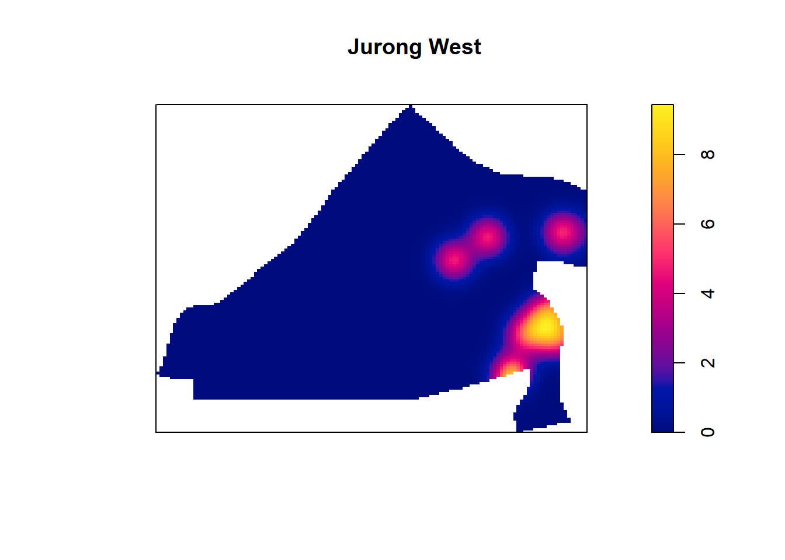